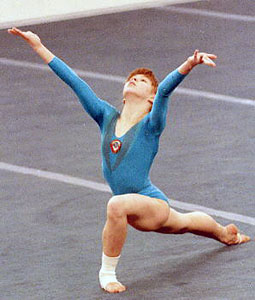

Natalia Frolova (USSR)
1986 Kraft Intl. AA Champion
1984 Jr. European V and FX Champion

Natalia was born on January 24, 1971 in Pushkin. She began gymnastics in 1978 and was coached by V. Mokhov and O. Mokhova at Dinamo.
Competition Results
1983
Jr. Friendship Tournament (Druzhba): 1st Team, 2nd AA, 1st UB, 3rd V
Jr. USSR Championships (Master of Sport Candidate): 1st AA
1984
All-Union Schoolchildren's Spartakiad: 2nd AA (Candidate for Master)
Jr. European Championships: 3rd AA, 1st V, 1st FX, 2nd B
Jr. Friendship Tournament (Druzhba): 1st Team, 6th AA, 2nd FX, 4th V
1985
All-Union Youth Games: 6th Team, 1st FX, 2nd V
Moscow News International: 5th AA, 2nd V, 2nd FX
USSR Championships: 6th AA
USSR Cup: 15th AA
1986
Kraft International: 1st AA, 1st V, 1st UB, 1st FX
Leningrad International: 2nd AA
USA-USSR Dual Meet: 1st Team, 3rd AA
USSR Championships: 3rd AA
USSR Cup: 16th AA
USSR Spartakiade: 7th Team, 12th AA, 3rd FX, 4th V
1987
Athens International: 1st V, 1st UB
Leningrad International: 1st V, 1st UB
USA-USSR Dual Meet: 1st Team, 4th AA
USSR Championships: 13th AA
USSR Cup: 8th AA, 4th V, 7th FX
1988
Moscow News International: 4th AA, 1st V
USA-USSR Dual Meet: 1st Team, 6th AA
USSR Championships: 12th AA
USSR Cup: 3rd Team, 11th AA
This page was created on August
13, 2005 and was last updated on August 12, 2026.
© Gymn Forum